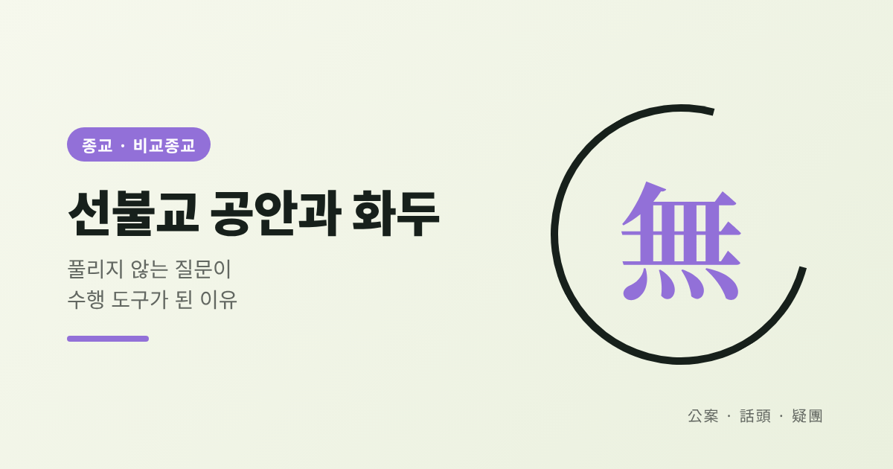
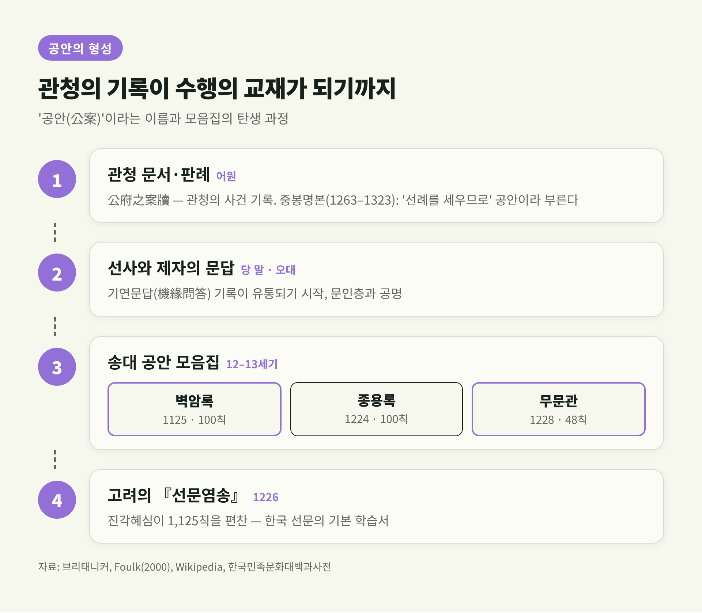
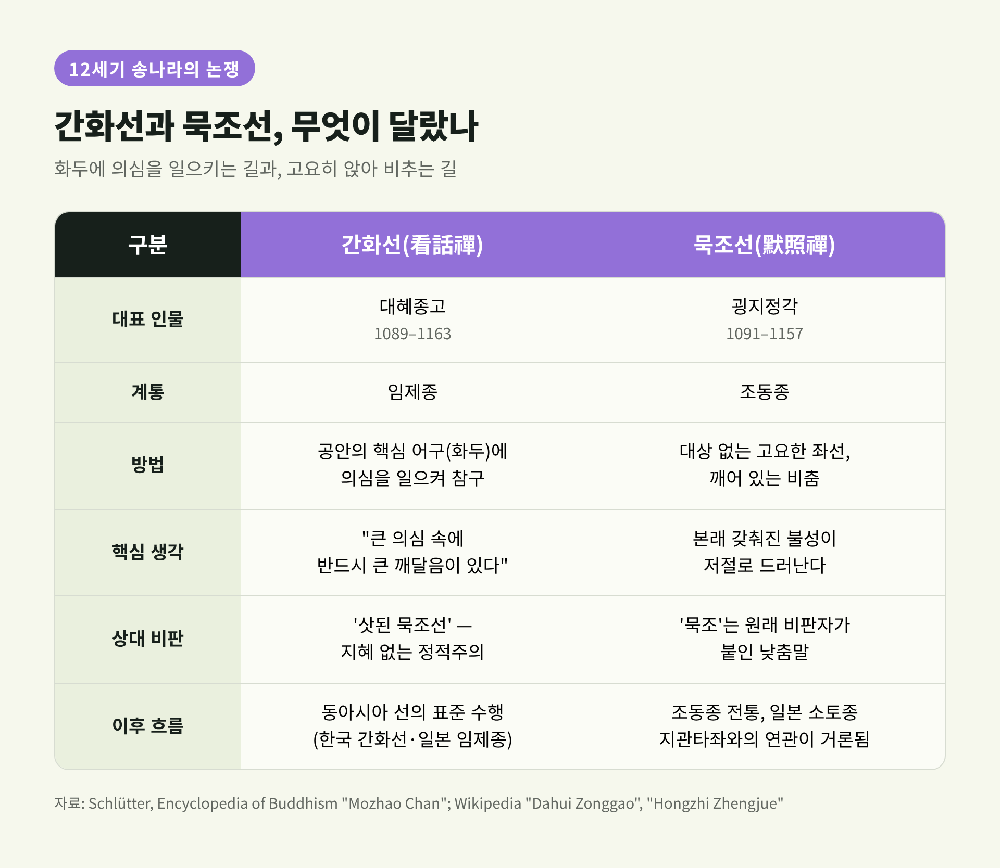
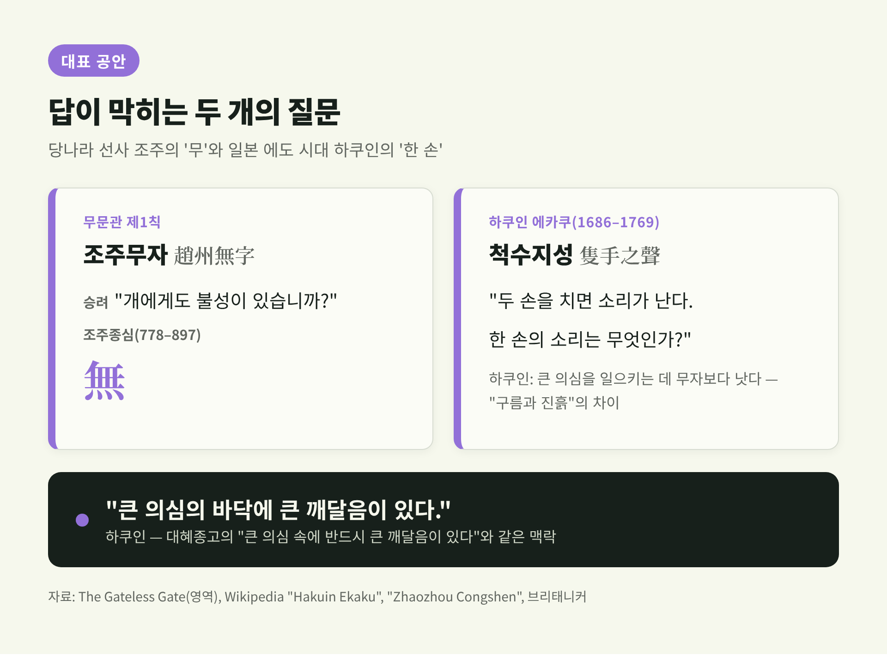
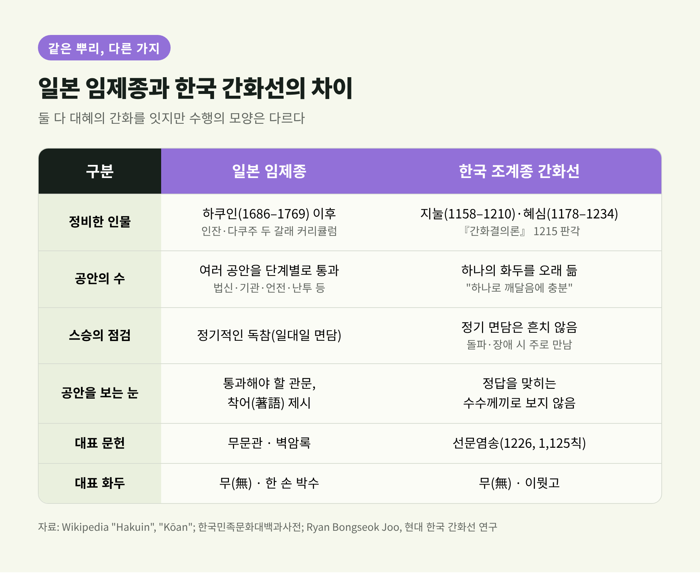
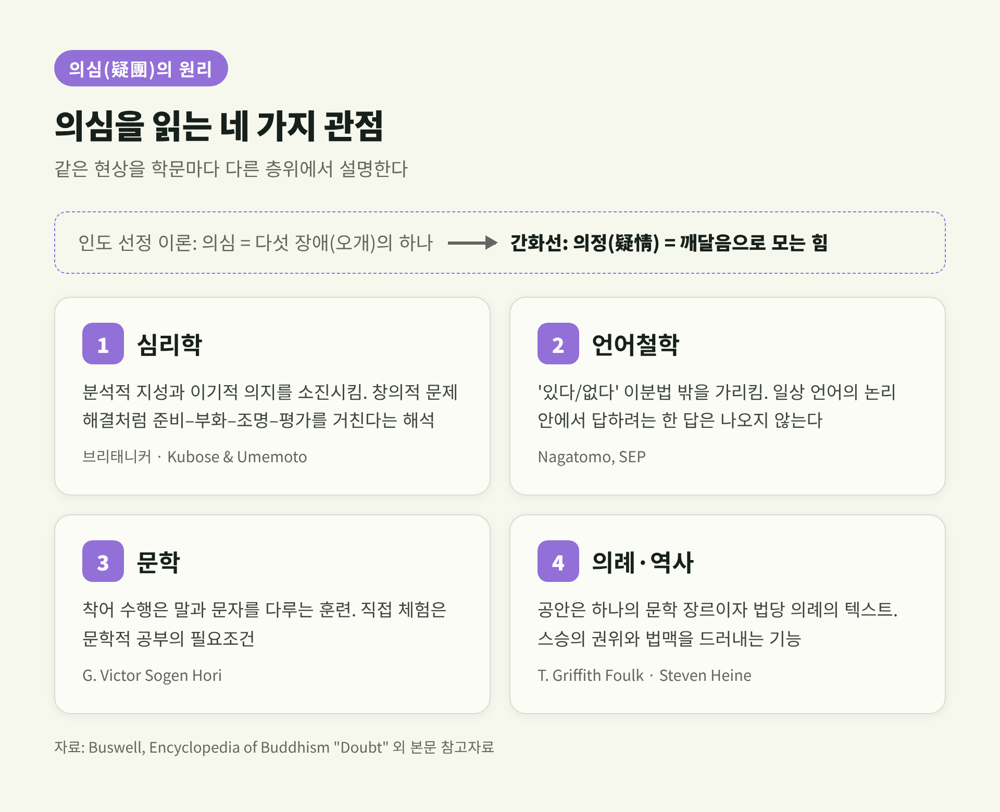

선불교 공안과 화두, 풀리지 않는 질문이 수행 도구가 된 이유

이번 글에서는 선불교의 공안(公案)과 화두(話頭)를 종교학의 눈으로 정리해 보겠습니다. 말의 기원부터 모음집의 탄생, 간화선 논쟁, 한국과 일본의 차이, 그리고 '의심'이 왜 수행의 도구가 되었는지에 대한 학계의 여러 해석까지 차례로 살펴봅니다.
먼저 세 줄로 요약하면 이렇습니다.
- 공안은 관청의 사건 기록·판례를 뜻하던 말로, 당·송대 선문답 기록이 『벽암록』(1125)·『무문관』(1228) 같은 모음집으로 정리되었습니다.
- 12세기 대혜종고는 공안의 핵심 어구인 화두에 '큰 의심'을 일으키는 간화선을 내세우며 굉지정각 계열의 묵조선을 비판했습니다.
- 공안이 왜 효과가 있는지는 지금도 해석이 갈립니다. 심리학적·언어철학적 설명이 있는가 하면, 공안을 문학·의례 텍스트로 읽는 역사학적 연구도 있습니다.
■ '공안'은 원래 관청의 문서였습니다
공안이라는 한자어는 처음부터 종교 용어가 아니었습니다.
원나라 선승 중봉명본(1263–1323)은 공안을 '공부지안독(公府之案牘)', 곧 관청의 사건 기록을 줄인 말로 설명했습니다. 공안이 민법처럼 '선례'를 세우기 때문에 그렇게 부른다는 것입니다. 불교학자 T. 그리피스 포크(Foulk)도 이 말이 법의 세계에서 왔으며, 판관의 책상과 재판 사건을 떠올리게 한다고 정리합니다. 초기 선종에서는 스승이 제자의 깨달음을 '판결하는 판관'처럼 서는 비유로 쓰였다고 봅니다.
다만 풀이가 하나로만 정리되지는 않습니다. 브리태니커는 문자적 뜻을 '공적 고시·공고(public notice)'로 소개합니다. 어느 쪽이든 '공적으로 공인된 기록'이라는 결은 같습니다.
선사들의 문답이 하나의 '판례집'처럼 읽히게 된 셈입니다.
■ 선문답 기록이 공안 모음집이 되기까지
공안의 재료는 선사와 제자가 나눈 짧은 만남, 이른바 기연문답(機緣問答)입니다. 스탠퍼드 철학 백과(SEP)에 따르면 이런 문답 모음은 당 말·오대에 유통되기 시작했고, 중국 문인층과 잘 어울렸습니다. 송대 중기에 이르면 공안이 선 수행의 핵심 교과가 됩니다. 이 문헌의 요지는 깨달음을 '설명'하는 데 있지 않고 '보여주는' 데 있다고 SEP는 정리합니다.
대표 모음집 두 권의 연도는 여러 자료에서 일치합니다.
- 『벽암록(碧巖錄)』 — 설두중현(980–1052)이 고칙 100개에 송(頌)을 붙였고, 원오극근(1063–1135)이 1111~1117년 무렵 강의로 평창을 더해 1125년 편찬했습니다(브리태니커·위키피디아 교차 확인). 여러 겹의 평이 쌓인 두툼한 책입니다.
- 『무문관(無門關)』 — 무문혜개가 48칙을 골라 1228년 여름 용상사에서 강설하고 그해 간행했습니다(서문·브리태니커·위키피디아). 본칙에 짧은 평과 송 한 겹만 붙여 간결합니다. 무문의 생년은 자료에 따라 1183년과 1184년으로 갈립니다.
전통적으로 공안은 '1,700칙'이라 일컬어집니다. SEP 일본 선 항목은 하위 질문까지 치면 약 3,000개에 이른다고 덧붙입니다.

흥미로운 일화도 있습니다. 원오의 제자 대혜종고가 학인들이 공안을 말로만 따지는 데 빠진다며 『벽암록』의 판목을 불태웠다는 전승입니다. 이후 약 두 세기 동안 유통이 끊겼다가 14세기 초 거사 장명원이 다시 엮었다고 전합니다. 다만 소각 이야기는 구전 전승으로 소개된다는 점을 함께 적어 둡니다.
■ 대혜의 간화선과 굉지의 묵조선
12세기 송나라에서는 수행법을 둘러싼 유명한 논쟁이 벌어집니다.
임제종의 대혜종고(1089–1163)는 공안 전체가 아니라 그 핵심 어구, 곧 화두에 마음을 모으는 '간화(看話)'를 내세웠습니다. 무자(無字) 공안을 특히 즐겨 썼고, 재가 문인들에게 보낸 편지에서도 일상 속 화두 참구를 권했습니다. 그가 남긴 말은 짧습니다. "큰 의심 속에 반드시 큰 깨달음이 있다."
반대편에는 조동종의 굉지정각(1091–1157)이 있었습니다. 그는 「묵조명」을 지었고, 모든 존재에 본래 갖춰진 불성을 강조하며 고요한 좌선 속에서 깨달음이 저절로 드러난다고 보았습니다. 불교학자 모턴 슐뤼터에 따르면 '묵조선'은 본래 비판자들이 붙인 낮춤말이었습니다. 굉지 자신은 마음이 흐릿한 무념 상태에 빠지면 안 되고 깨어 있어야 한다고 강조했습니다.
대혜는 이를 "삿된 묵조선"이라 부르며, 지혜 없는 정적주의로 흐른다고 공격했습니다.

이 논쟁을 어떻게 볼지는 학자마다 다릅니다.
- 슐뤼터(『How Zen Became Zen』, 2010)는 대혜의 실제 표적이 12세기 초 부흥한 조동종 전통 전체였으며, 사대부 후원자와 정부 정책 같은 사회적 조건이 얽혀 있었다고 봅니다.
- 버스웰은 간화를 중국 선 안의 '지름길' 수행으로 평가합니다.
- 포체스키는 간화가 돈오를 표방하지만 실제로는 집중을 다듬는 점진적 과정이며 선을 정형화했다고 지적합니다.
어느 쪽이 옳다고 판정하기보다, 같은 논쟁이 교리·수행·사회사의 층위에서 달리 읽힌다는 점이 흥미롭습니다. 결과만 보면 간화는 대혜 이후 중국의 표준 수행이 되었고, 송 말에는 조동종도 이를 받아들였습니다.
■ 대표 공안 두 가지: 조주의 '무'와 하쿠인의 '한 손'
가장 널리 알려진 공안은 『무문관』 제1칙, 조주무자(趙州無字)입니다. 한 승려가 조주종심(778–897)에게 묻습니다. "개에게도 불성이 있습니까?" 조주는 한 글자로 답합니다. "무(無)."
불교 교리상 모든 존재에 불성이 있다고 배운 승려에게 이 대답은 막다른 벽입니다. 무문은 평에서 온몸의 "360개 뼈마디와 8만4천 털구멍"을 이 '무'에 모으라고 말합니다. "삼킬 수도 뱉을 수도 없는 뜨거운 쇠구슬"을 머금은 듯해야 한다고도 합니다. 그것은 허무도, '있다·없다'의 상대적 없음도 아니라고 못 박습니다. 무문 자신도 이 공안 하나로 6년을 씨름했다고 전합니다.
일본에는 또 다른 상징적 공안이 있습니다. 일본 임제종을 부흥시킨 인물로 평가받는 하쿠인 에카쿠(1686–1769)가 고안한 '한 손 박수(척수지성)'입니다. "두 손을 치면 소리가 난다. 한 손의 소리는 무엇인가?" 하쿠인은 이 공안이 초심자에게 큰 의심을 일으키는 데 무자보다 낫다며, 그 차이를 "구름과 진흙"에 견주었습니다.

역사학 쪽에서는 단서가 붙습니다. 종교학자 스티븐 하이네는 '무'라는 대답이 조주의 가장 이른 10~11세기 기록에는 보이지 않는다고 지적합니다. 선 문헌에는 최소 열두 가지 판본이 전하고, 그중에는 "있다(有)"라고 답하는 판본도 있다고 합니다. 수행 전통 안에서의 의미와 문헌사적 사실은 서로 다른 질문이라는 점을 보여 주는 대목입니다.
■ 일본 임제종의 공안 커리큘럼과 한국 조계종의 간화선
같은 대혜의 방법을 이었지만 일본과 한국의 모습은 꽤 다릅니다.
일본 임제종은 하쿠인 이후 공안을 체계적인 교과 과정으로 다듬었습니다. 하쿠인 계열의 가잔 지토(1727–1797) 아래에서 제자 인잔 이엔과 다쿠주 고센이 두 갈래 커리큘럼을 만들었습니다. 공안은 법신·기관·언전·난투·오위십중금 같은 단계로 분류됩니다. 수행자는 첫 관문을 통과한 뒤 수많은 공안을 차례로 거치고, 매번 스승과의 독대(독참)에서 점검을 받습니다. 한시 등에서 뽑은 '착어(著語)'를 제시하는 과정도 있습니다. 불교학자 빅터 소겐 호리는 이 착어 수행을 '말과 문자를 다루는 문학 훈련'으로 보았습니다.
한국의 흐름은 고려의 보조지눌(1158~1210)에서 시작합니다. 한국민족문화대백과에 따르면 지눌은 중국 간화선을 들여왔고, 『간화결의론』에서 무자 화두를 들 때의 열 가지 병통을 정리했습니다. 있다·없다로 이해하지 말 것, 논리로 따지지 말 것, 문자에서 답을 찾지 말 것, 깨달음을 기다리지 말 것 같은 주의입니다. 이 책은 지눌 사후 제자 진각혜심(1178~1234)이 유고에서 찾아 1215년에 판각했습니다.
혜심은 1226년 공안 1,125칙을 모은 『선문염송』을 편찬했습니다. 몽고 침입으로 판이 소실된 뒤 1243년 347칙이 증보되었는데, 같은 항목 안에 1244년이라는 기록도 함께 보입니다. 이 책은 한국 선문의 기본 학습서가 되었고, 간화선은 조선을 거쳐 오늘의 조계종까지 이어집니다.

현대 한국 수행의 특징을 연구한 주봉석(Ryan Bongseok Joo)의 논문은 차이를 이렇게 요약합니다. 한국에서는 "하나의 공안 참구만으로 완전한 깨달음에 충분하다"고 봅니다. 일대일 면담을 일과로 두는 관행이 흔치 않고, 공안을 "정답을 맞혀야 하는 수수께끼"처럼 대하지 않습니다. 대표 화두로는 무자와 '이뭣고(이것이 무엇인가)'가 꼽힙니다. 성철 스님은 '무'만 되뇌면 고요함에 빠질 수 있으니 "조주는 왜 무라고 했는가"를 물어야 한다고 가르쳤습니다.
한계도 함께 적어야 공정할 것입니다. 조계종 안에서도 2011년 토론회에서 간화선의 형식주의와 교육 체계 부족을 다시 살피자는 요구가 나왔습니다. 전통이 살아 있다는 것은 내부의 질문도 살아 있다는 뜻이기도 합니다.
■ 의심은 어떻게 수행의 도구가 되었나 — 네 갈래 해석
인도 불교의 선정 이론에서 의심은 수행을 가로막는 다섯 장애(오개) 가운데 하나였습니다. 그런데 동아시아의 간화선에서는 의심이 깨달음으로 몰아가는 주된 힘이 됩니다. 불교학자 로버트 버스웰은 이 전환을 '의정(疑情)', 곧 의심의 느낌이라는 말로 설명합니다. 화두에서 생긴 의심이 일상의 불확실성까지 끌어안으며 커지다가, 어느 순간 터지면서 자기중심적 관점이 무너진다는 것입니다.
예전엔 걸림돌이었던 의심이, 이 전통에서는 디딤돌이 된 셈입니다.
이 원리를 학계는 여러 방식으로 읽습니다.
- 전통·심리학적 해석 — 브리태니커는 공안이 "분석적 지성과 이기적 의지를 소진시키려는" 장치라고 설명합니다. 심리학자 쿠보세와 우메모토는 공안 참구와 창의적 문제 해결이 준비–부화–조명–평가의 네 단계를 공유하며, 조명은 예기치 않은 갑작스러운 통찰로 온다고 보았습니다.
- 언어철학적 해석 — SEP의 나가토모 시게노리는 선이 '이것 아니면 저것'의 논리를 실재 이해의 기준으로 받아들이지 않는다고 설명합니다. '있다'의 의미는 '없다'에 기대어 성립하므로, 일상 언어의 논리 안에서 답하려는 한 답은 나오지 않는다는 것입니다.
- 문학 텍스트로 보는 해석 — 호리는 직접 체험이 문학적 공부의 경쟁자가 아니라 그 필요조건이라고 봅니다. 공안 수행 초기는 인지보다 '의지의 시험'에 가깝다고도 했습니다.
- 의례·제도로 보는 해석 — 포크는 공안을 사고를 깨뜨리는 도구로만 보는 대중적 설명이 공안이 "문학 장르"라는 사실을 놓친다고 비판합니다. 공안은 법당 설법과 독참에서 '들어 보이는' 의례적 맥락에서 쓰였고, 스승의 권위를 드러내는 장치이기도 했다는 것입니다. 하이네·래크스 등은 공안 문헌과 면담이 법맥과 제도적 위계를 정당화하는 기능도 했다고 봅니다.

이 해석들은 서로를 배제하지 않습니다. 수행자의 내면에서 일어나는 일과, 그 수행을 떠받치는 텍스트와 제도는 같은 현상의 다른 면일 수 있기 때문입니다.
■ 다른 전통의 역설적 언어와 짧게 견주어 보면
역설로 듣는 이를 흔드는 언어는 선불교만의 것이 아닙니다.
이집트 사막의 초기 그리스도교 은수자들 금언을 5세기 말 무렵 모은 『사막 교부 금언집』에는 "압바, 한 말씀 주십시오"라는 청에 답하는 짧은 말들이 전합니다. "피를 내어주고 성령을 받으라" 같은 압축된 문장이 그 예입니다. 이슬람 수피 전통의 '가르침 이야기'는 열린 결말로 듣는 이마다 다르게 읽히도록 짜여 있고, 사고 과정 자체를 바꾸는 것을 목적으로 한다고 설명됩니다. 나스레딘의 우스운 일화가 대표적입니다.
다만 이것은 형식의 닮음일 뿐입니다. 각 전통이 그 언어로 도달하려는 곳과 신학적 전제는 서로 다릅니다.
정리하면 이렇습니다.
공안은 관청의 기록에서 이름을 빌려 와, 선사들의 문답을 '판례'처럼 남긴 문헌이었습니다. 대혜는 그 판례에서 한 마디를 뽑아 의심을 키우는 방법을 만들었고, 일본과 한국은 그 방법을 각자의 방식으로 길러 왔습니다. 그것이 왜 작동하는지는 심리학·언어철학·역사학이 저마다 다른 답을 내놓고 있습니다.
"답이 막히는 자리에서 질문이 시작된다" — 공안이 천 년 가까이 이어진 이유를 한 줄로 줄이면 이쯤이 아닐까 합니다.
조주의 '무'를 이해했느냐고 물으신다면, 아직 모르겠다고 답하는 편이 이 전통에 가장 정직한 대답일 것입니다.
참고자료
- Britannica, "koan"
- Britannica, "Hakuin"
- Britannica, "Apophthegmata Patrum"
- Stanford Encyclopedia of Philosophy, "Chan Buddhism"
- Stanford Encyclopedia of Philosophy, Nagatomo, "Japanese Zen Buddhist Philosophy"
- 한국민족문화대백과사전, 「간화선」
- 한국민족문화대백과사전, 「간화결의론」
- 한국민족문화대백과사전, 「선문염송」
- Morten Schlütter, "Mozhao Chan (Silent Illumination Chan)", Encyclopedia of Buddhism
- Robert E. Buswell Jr., "Doubt", Encyclopedia of Buddhism
- University of Hawaiʻi Press, Schlütter, How Zen Became Zen
- T. Griffith Foulk, "The Form and Function of Koan Literature"
- G. Victor Sogen Hori, "Translating the Zen Phrase Book", Nanzan Bulletin 23
- Ryan Bongseok Joo, "Gradual Experiences of Sudden Enlightenment"
- Steven Heine, "Four myths about Zen Buddhism's Mu koan", OUP Blog
- Kubose & Umemoto, "Creativity and the Zen Koan", Psychologia
- Lion's Roar, "Readings of the Gateless Barrier"
- The Gateless Gate 영역(Shimomissé), Terebess Asia Online
- Wikipedia, "Kōan" · "Blue Cliff Record" · "The Gateless Barrier"
- Wikipedia, "Dahui Zonggao" · "Hongzhi Zhengjue" · "Hakuin Ekaku" · "Korean Seon"
- Wikipedia, "Sayings of the Desert Fathers" · "Teaching stories"
- 경향신문, 「지금 불교계 화두는 '화두 수행' 회의론」(2011.10.13)